Fllex — запуск подписочного финтех-продукта на
рынке ОАЭ
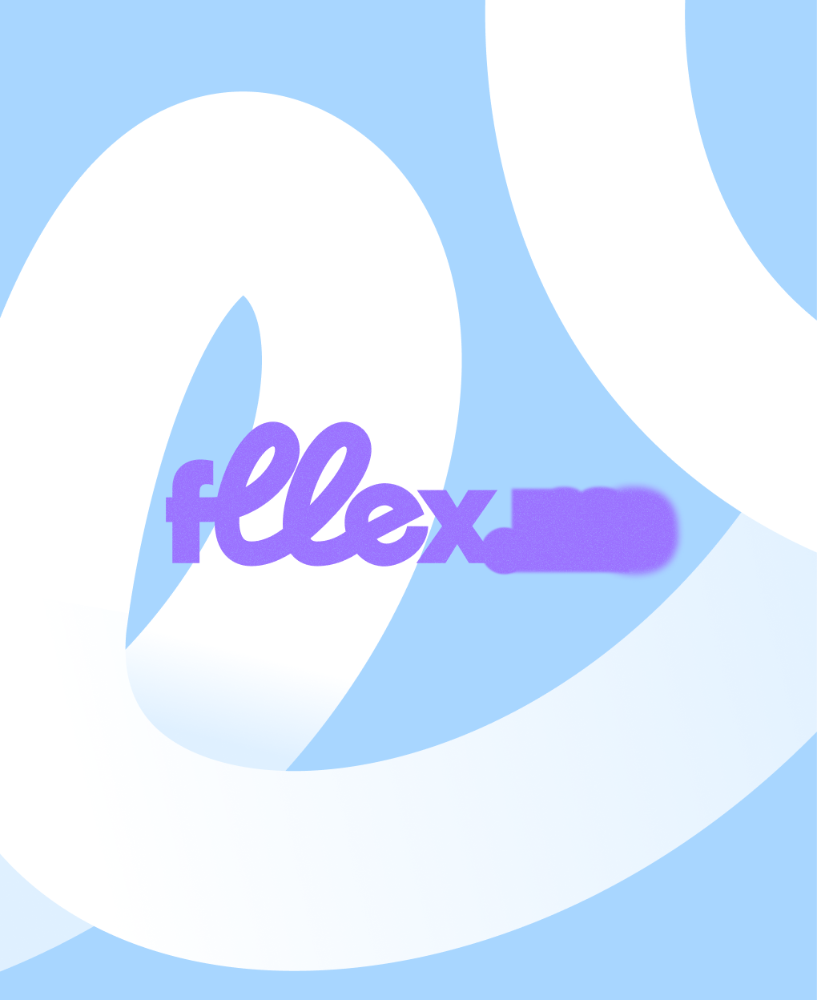
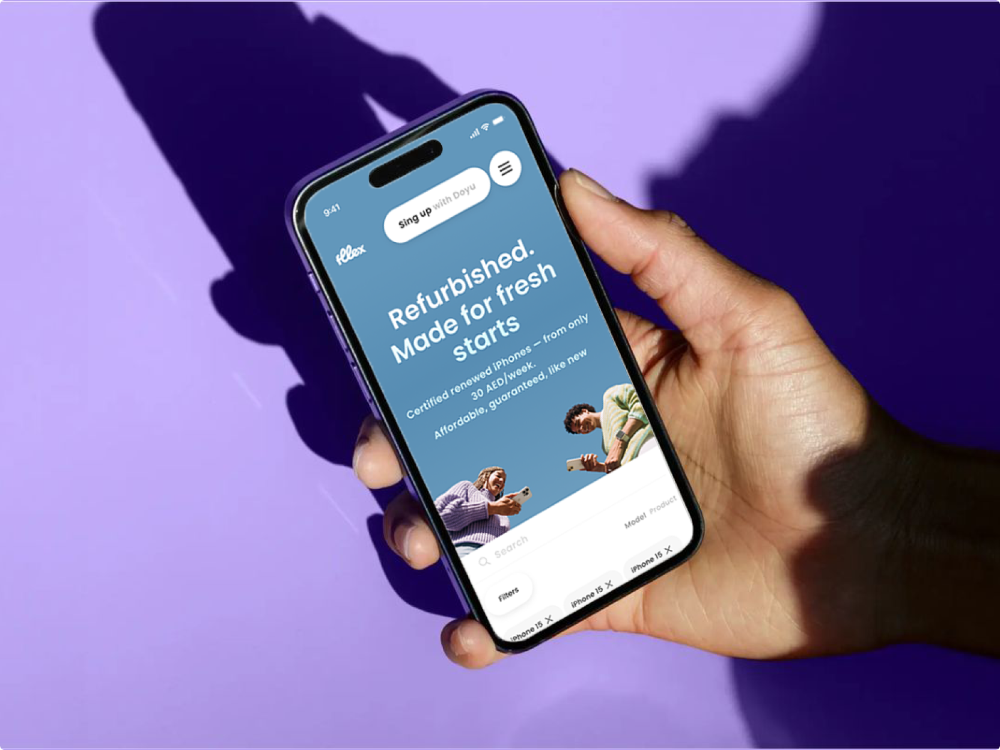
Содержание
О продукте
Fllex появился как новое направление внутри компании, развивавшей решения для удалённого управления мобильными устройствами. Одним из ключевых преимуществ платформы была возможность централизованного iOS-устройствами. Это позволяло клиентам снижать риски при финансировании смартфонов и эффективнее работать с возвратом устройств.
Опыт работы с такими клиентами показал устойчивый спрос на более доступные способы получения смартфонов. Особенно это касалось пользователей, которым были недоступны классические кредитные продукты или покупка новых устройств за полную стоимость.
На этом фоне появилась идея Fllex — сервиса подписки на восстановленные iPhone с возможностью последующего выкупа. Вместо оформления кредита пользователь получал устройство в пользование, вносил ежемесячный платёж и при желании мог выкупить смартфон в конце программы за стоимость последнего платежа.
Проект запускался параллельно с развитием других продуктов компании. К этому моменту я уже отвечал за развитие Doyu и участвовал в принятии продуктовых решений на уровне экосистемы, что впоследствии позволило органично связать оба продукта между собой.
Моя роль
На протяжении проекта я совмещал роли Product Owner и Product Designer.
В мои обязанности входили:
- исследование рынка и проведение глубинных интервью
- участие в формировании скоринговой модели
- разработка брендинга и коммуникации продукта
- UX-проектирование и развитие пользовательского опыта
- формирование продуктового бэклога
- постановка задач команде разработки
- приоритизация и принятие продуктовых решений
- анализ поведения пользователей и продуктовых метрик
- запуск и проверка продуктовых гипотез
- участие в организации поддержки и сборе обратной связи
По мере развития проекта зона ответственности постепенно выросла до управления развитием продукта и принятия ключевых решений по запуску нового направления бизнеса.
Проверка спроса в Мексике
На этом этапе моей задачей было участие в исследовании рынка и формировании первой версии продукта. Вместе с CEO и другим Product Owner я участвовал в подготовке тестовой кампании, проведении глубинных интервью и анализе первых лидов.
Мы изучали причины отказов по кредитам, отношение пользователей к подписочной модели, уровень дохода и готовность проходить дополнительные проверки ради получения устройства.
Параллельно на основе интервью и первых заявок начала формироваться скоринговая модель. Нам было важно понять, по каким признакам можно предварительно оценивать пользователей ещё до полноценной проверки.
Исследование показало устойчивый интерес к продукту и подтвердило жизнеспособность гипотезы. Пользователи были готовы рассматривать подписку как альтернативу кредиту и рассрочке. Это позволило перейти от исследования к подготовке реального запуска.
Рекламные баннеры
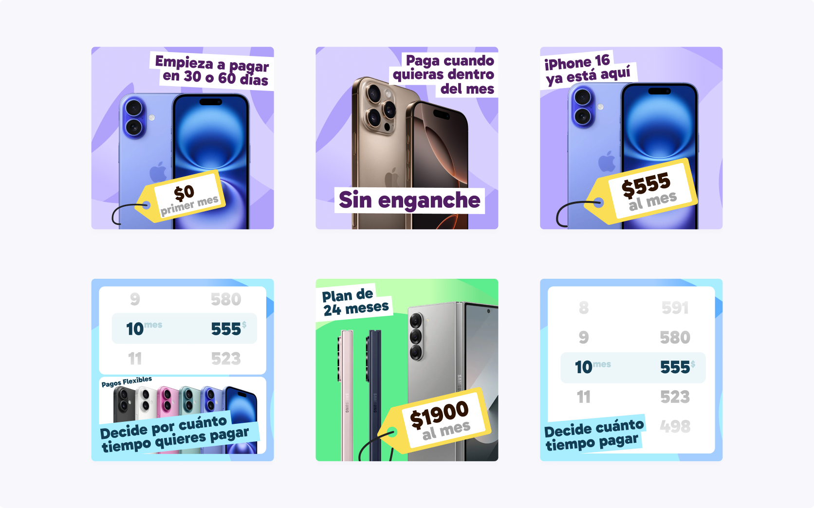
Первые элементы бренда
Параллельно с проверкой спроса нужно было быстро собрать визуальную оболочку будущего продукта. Времени на полноценный брендинг не было, поэтому название, логотип и базовая айдентика были разработаны мной буквально в день постановки задачи.
Название Fllex родилось из идеи flexible payments. Дополнительная буква «L» позволила получить короткое доменное имя без потери читаемости. В логотипе две наклонные буквы L складывались в характерную спираль — простой графический элемент, который визуально ассоциировался с гибкостью и позже стал частью фирменного стиля.
Для первых рекламных запусков использовалась яркая палитра вокруг сиреневых и небесно-голубых оттенков. Креативы строились максимально прямолинейно: устройство, ежемесячный платёж и понятный призыв к действию.
Лого и графические эллементы
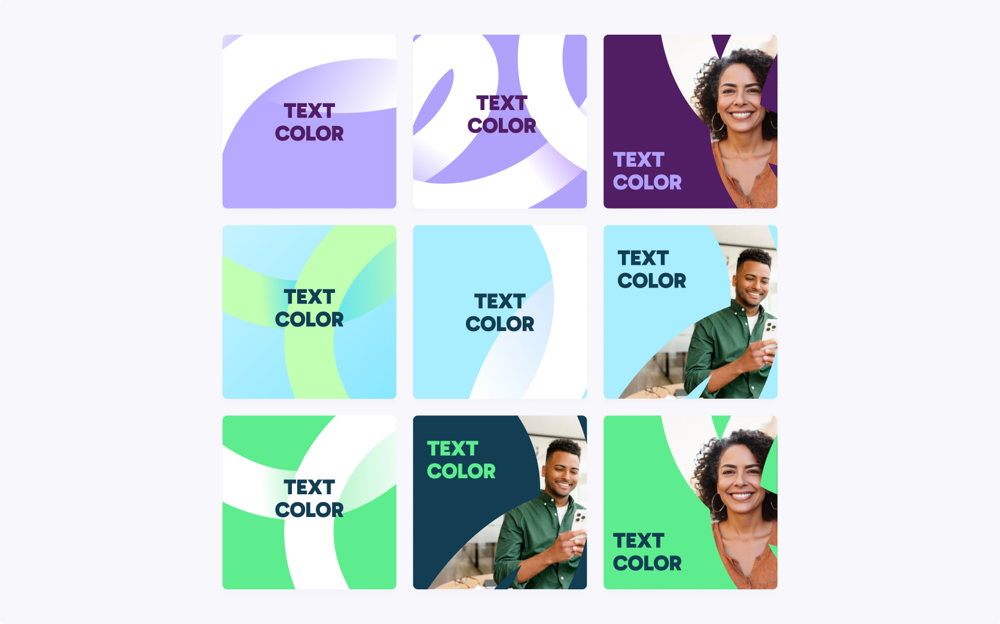
Запуск в ОАЭ
После появления потенциальных партнёров стратегия проекта изменилась. Вместо запуска в Мексике компания решила сосредоточиться на рынке ОАЭ, где появилась возможность быстрее проверить бизнес-модель на реальных продажах.
К этому моменту я уже выступал Product Owner продукта Doyu и участвовал в принятии решений на этапе исследования рынка, формирования скоринговой логики и проверки первых гипотез Fllex.
Благодаря этому после смены рынка и перехода к запуску ответственность за развитие Fllex фактически была передана мне. Ключевые продуктовые решения по проекту принимались в связке CEO + Product Owner.
Помимо дизайна я отвечал за формирование продуктового бэклога, определение приоритетов разработки, постановку задач команде и развитие пользовательского опыта продукта от первого касания до получения устройства.
Если на этапе исследования основной задачей было понять рынок, то теперь нужно было превратить гипотезу в работающий бизнес.
Превращаем обязательную проверку в ценность
Одной из главных проблем первой версии продукта был разорванный пользовательский путь. Для получения устройства пользователю приходилось проходить несколько обязательных этапов проверки, которые воспринимались как набор несвязанных действий и создавали дополнительное трение в воронке.
Анализируя пользовательский путь, я пришёл к выводу, что проблема заключается не только в количестве шагов, но и в отсутствии понятной ценности между ними. Пользователь не понимал, зачем ему проходить очередную проверку и какую выгоду он получает в процессе.
В качестве решения я пересобрал CJM и предложил концепцию Shopping Pass — специального доступа к программе покупки устройств. Вместо очередного этапа верификации пользователь получал понятную цель и ощущение доступа к отдельному продукту внутри экосистемы.
По сути обязательный KYC-процесс был переупакован в самостоятельный продуктовый артефакт со своей ценностью и логикой. После защиты концепции решение было взято в разработку и стало центральной частью первой версии воронки.
Shopping Pass помог связать между собой Fllex и Doyu, сделать пользовательский путь более понятным и улучшить восприятие всего процесса оформления устройства.
Shopify и Shopping Pass
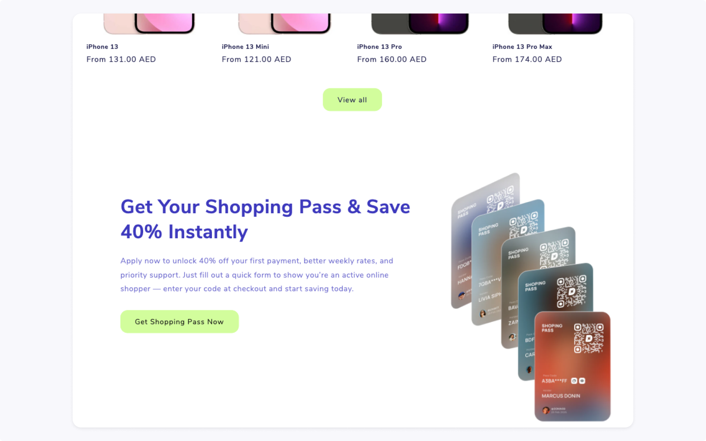
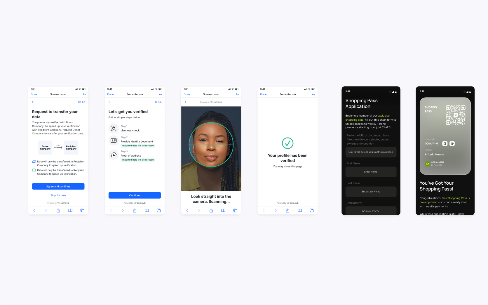
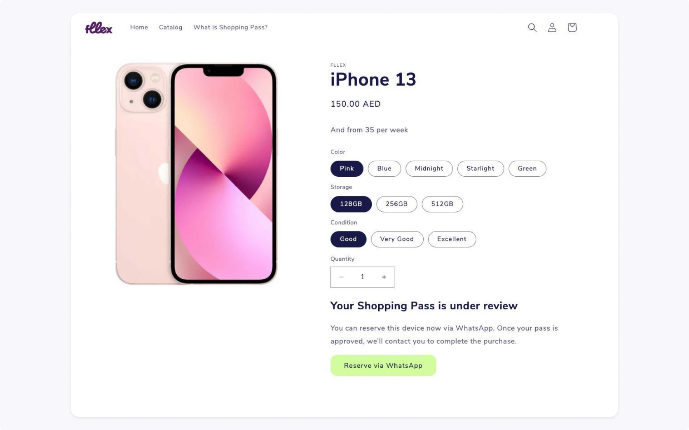
От Shopify к собственной платформе
Shopify позволил в короткие сроки выйти на новый рынок, проверить спрос на продукт и собрать большое количество инсайтов о поведении пользователей. После подтверждения гипотезы стало очевидно, что дальнейший рост продукта потребует более тесной интеграции со скорингом, Doyu и внутренними операционными процессами.
По итогам запуска было принято решение отказаться от временной архитектуры вокруг Shopify и начать разработку собственной платформы. Моей задачей было сформировать продуктовые требования, определить новые сценарии и спроектировать пользовательский путь для следующей версии продукта.
Новая система позволила объединить Fllex, Doyu и внутренние сервисы компании в единую экосистему и подготовить основу для дальнейшего масштабирования.
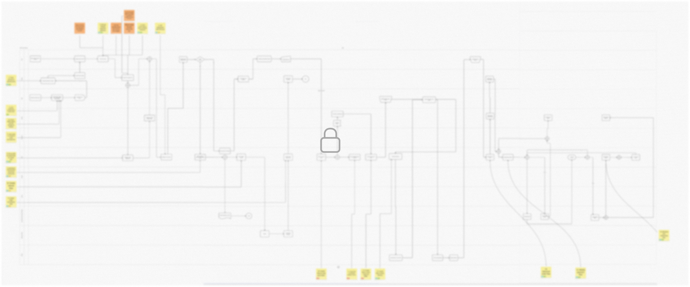
Маркетинговая айдентика, заложенная ещё на этапе проверки гипотезы, практически не менялась: логотип, фирменная палитра и графические элементы хорошо показали себя в рекламных кампаниях и сохранились в дальнейших итерациях продукта.
При запуске собственной платформы основной фокус сместился на цифровой опыт. Сайт и пользовательские сценарии получили более спокойный и лаконичный визуальный стиль с акцентом на устройство как главный объект внимания. При проектировании интерфейсов я ориентировался на визуальные паттерны, знакомые аудитории пользователей Apple: большое количество воздуха, простая композиция страниц и минимальное количество визуального шума.
При этом связь между маркетингом и продуктом сохранилась. Цветовая палитра, фирменные элементы и характер бренда органично использовались как в рекламных материалах, так и внутри цифровых продуктов, создавая целостное восприятие сервиса на всех этапах взаимодействия.
Позже фирменный стиль вышел за пределы цифровой среды и использовался в брендированной упаковке устройств.
Главная, карта товара и компоненты Fllex.me
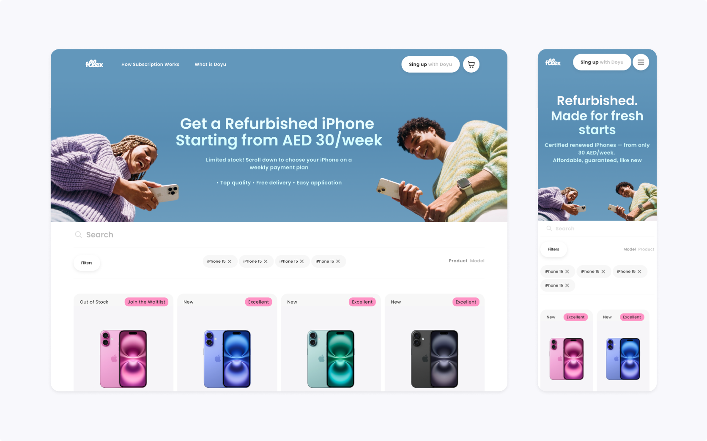
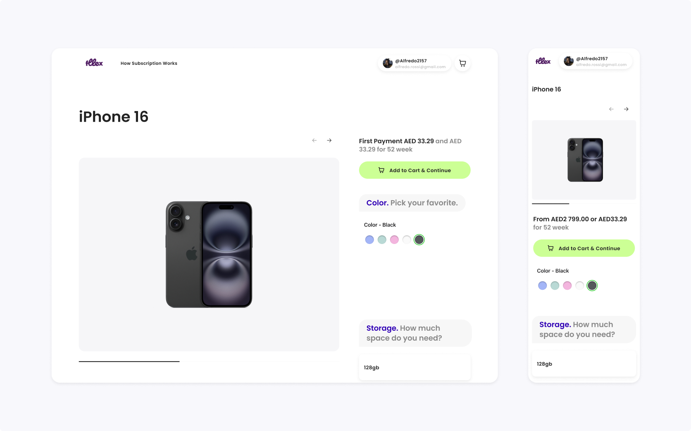
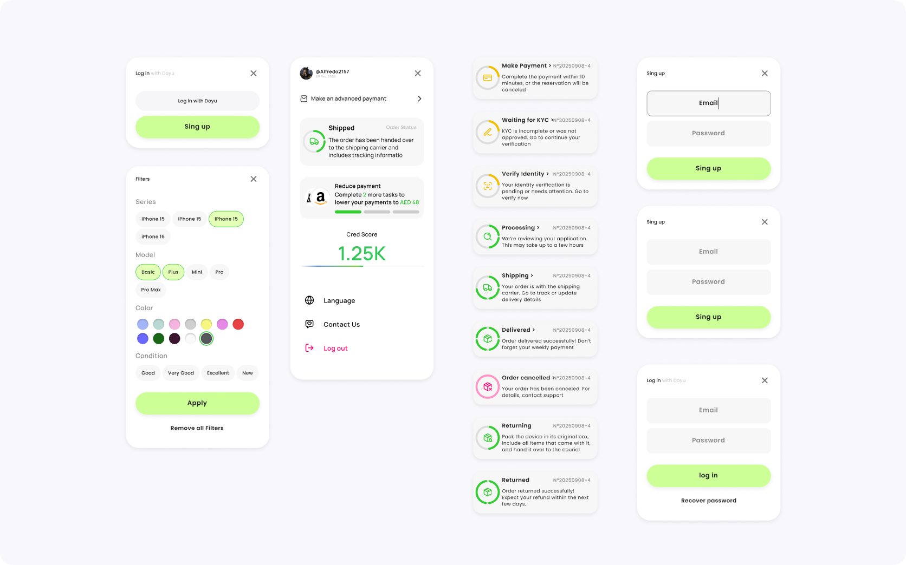
Оптимизация воронки
После перехода на собственную платформу появилась возможность полностью пересобрать пользовательский путь и избавиться от ограничений, которые раньше диктовал Shopify.
Я отвечал за анализ поведения пользователей и развитие воронки. Для этого регулярно изучал продуктовые метрики, проводил интервью с клиентами после прохождения онбординга, участвовал в работе поддержки и лично разбирал проблемные кейсы пользователей.
Это позволило быстро выявить основные точки потерь и сформировать набор продуктовых гипотез для следующих итераций.
Одним из главных решений стало возвращение к привычной для e-commerce логике покупки. Если в Shopify-версии пользователь фактически начинал путь с получения Shopping Pass, то в новой версии продукт выглядел как обычный интернет-магазин.
Пользователь выбирал устройство, добавлял его в корзину и оформлял заказ привычным способом. Скоринг, KYC и остальные проверки сохранились, но их удалось встроить в процесс органичнее. Пока происходила проверка, устройство резервировалось за пользователем. В случае отказа заказ автоматически отменялся.
Бесшовное KYC
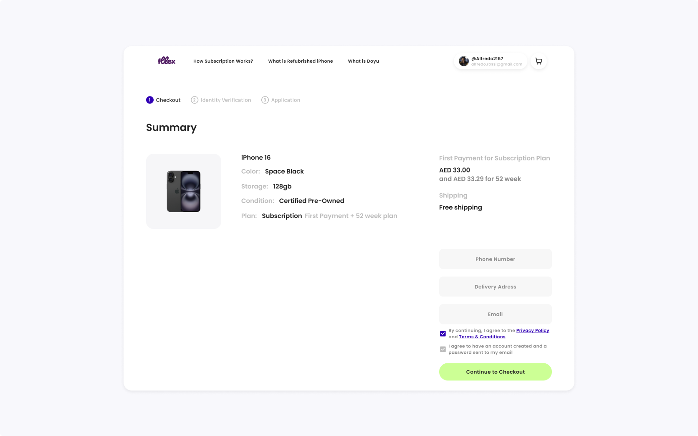
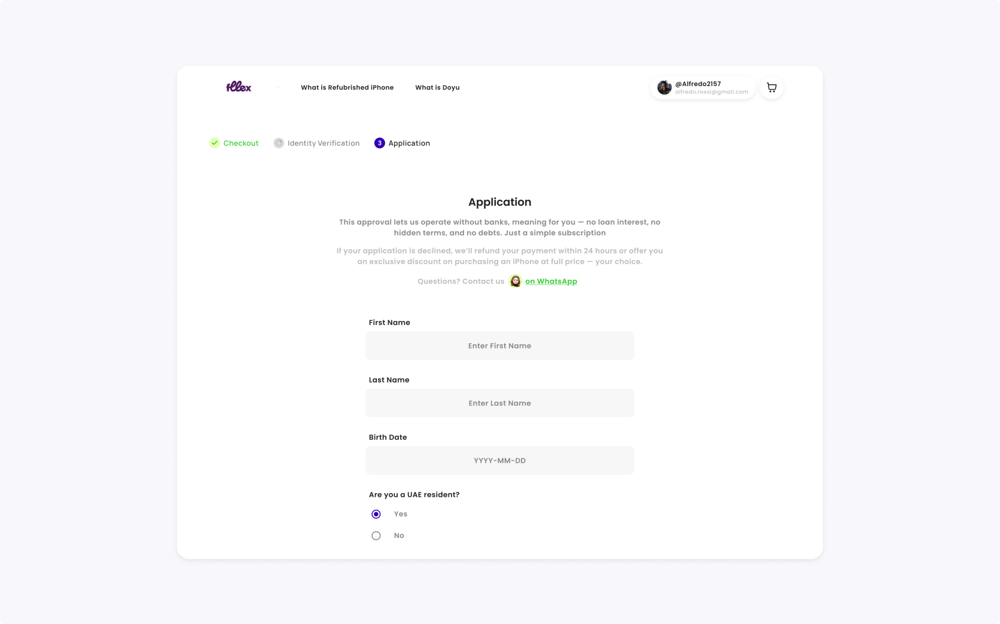
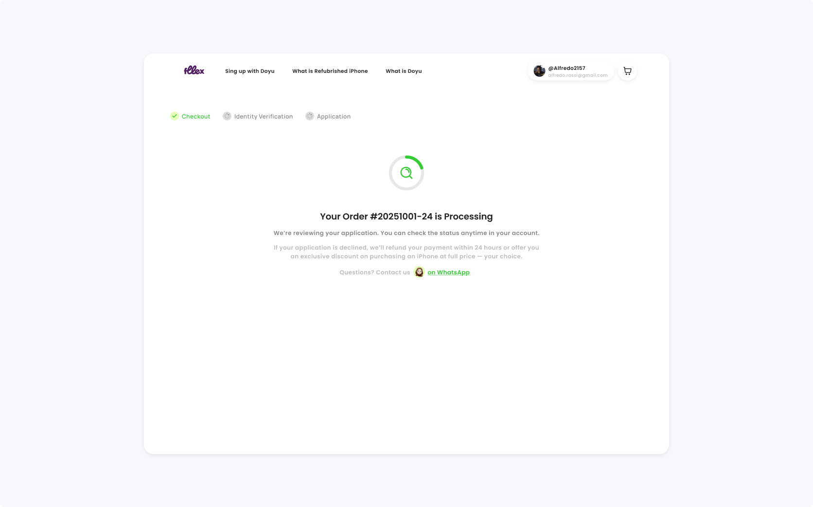
Снижение нагрузки на поддержку
В процессе анализа обращений стало понятно, что большая часть вопросов связана не со сложностью продукта, а с недостатком информации в нужный момент времени.
В результате FAQ перестал быть отдельной страницей и появился в ключевых точках воронки. Дополнительно были подготовлены отдельные страницы, объясняющие модель подписки, процесс покупки и роль Doyu в экосистеме продукта.
Практически во всех местах принятия решения появились короткие информационные подсказки и пояснения человеческим языком: рядом с выбором состояния устройства, способа покупки, условиями подписки и другими критически важными элементами интерфейса.
После нескольких последовательных итераций удалось значительно упростить восприятие продукта, увеличить прохождение онбординга на 43% и снизить количество обращений в поддержку более чем на 40%.
Подсказки и сториборды
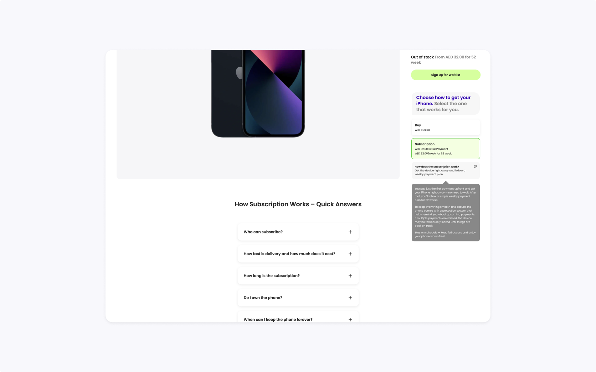
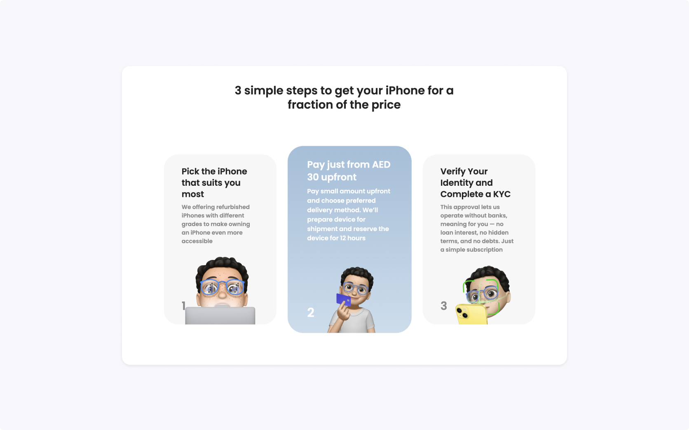
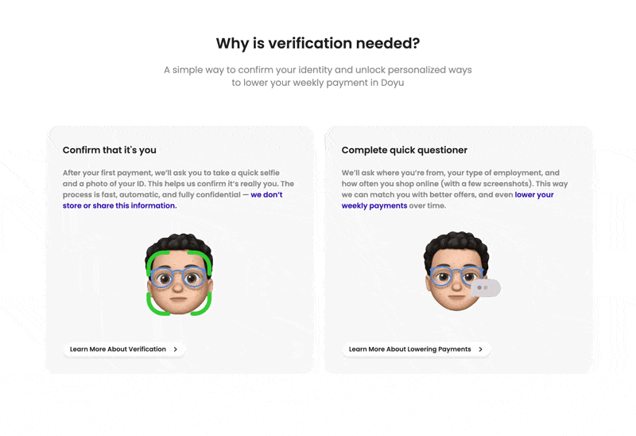
Результат
За время работы над Fllex удалось:
- подтвердить спрос на новую модель покупки устройств через исследования и тестовые запуски
- запустить новое направление бизнеса внутри компании на рынке ОАЭ
- увеличить прохождение онбординга на 43%
- снизить количество обращений в поддержку более чем на 40%
- перейти от Shopify MVP к собственной платформе
- полностью распродать первую партию устройств быстрее планируемого срока
Fllex стал для меня проектом, в котором я отвечал за развитие продукта целиком: от исследования рынка и проверки гипотез до запуска, аналитики, продуктовых решений и развития бизнес-направления.